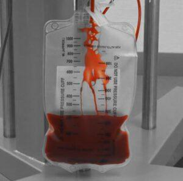
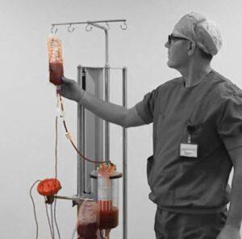
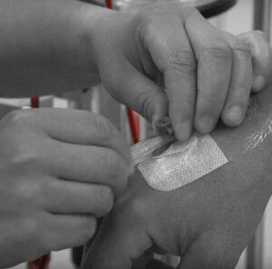
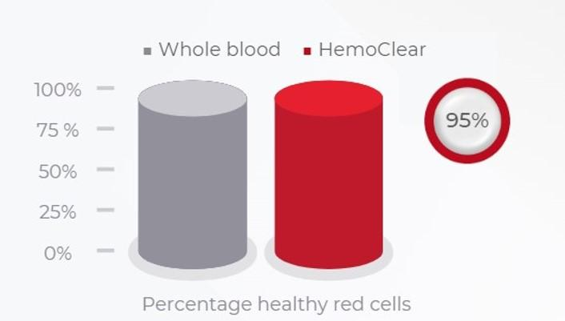
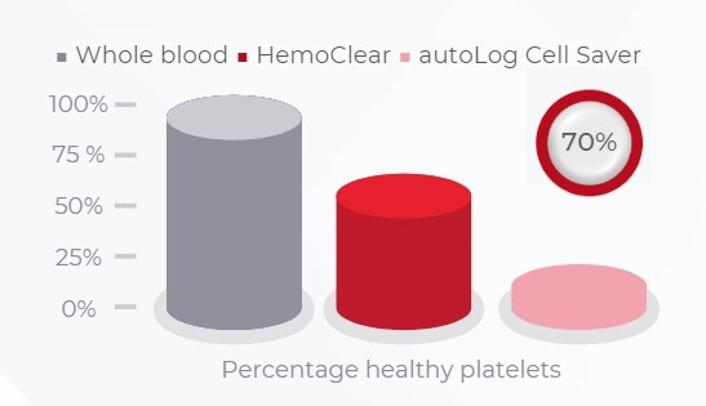
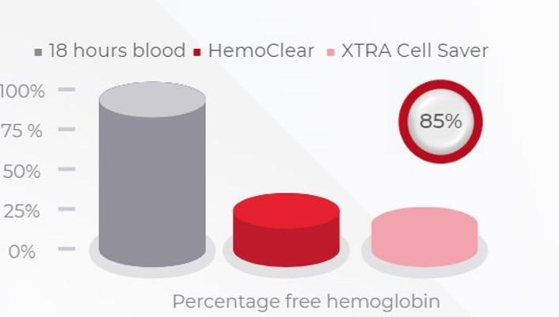
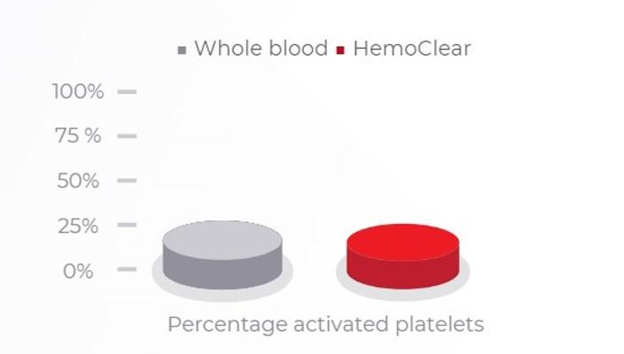

01
Featured Product
HemoClear
The novel device for autologous blood transfusion — washing and micro-filtering shed blood into high-quality, platelet-rich transfusion blood at the bedside.
01
95%Red blood cell recovery
02
70%Platelet recuperation
03
30minBedside procedure
04
8unitsPer filter, in 4 hours
01 — Videos
HemoClear in motion.
02
The standard cell salvage process using HemoClear
03
A practical guide to using HemoClear for cell salvage
04
Cell salvage when surgical techniques could cause blood clotting
05
HemoClear filter procedure — internal training
02 — The Challenge
Donor blood carries hidden costs.
Despite its broad applicability, allogeneic (donor) red blood cell transfusion is associated with health risks, high treatment costs, and scarcity.
Donor blood transfusion is linked to medical complications, longer recovery time, and increased mortality — and supply is often most limited where it is needed most.
03 — The Solution
The patient's own blood, recovered.
Patient Blood Management (PBM) improves outcomes by reducing the use of donor blood. Using a patient's own shed blood for transfusion is a valuable PBM tool.
Autologous salvaged blood is of higher quality than banked donor blood — the cells have not suffered the adverse effects of storage — and it matches the patient's profile, available even in severe bleeding, at lower cost.
04 — How it works
A straightforward, gravity-driven bedside procedure.

01
Collect
Blood lost during or after surgery is aspirated from the field, mixed with anticoagulant, cleared of large debris, and held in a collection reservoir.

02
Filter
Collected blood is washed with NaCl 0.9% and micro-filtered by gravity at the bedside — no centrifuge, no expensive consumables, no specially trained operator.

03
Transfuse
High-quality, platelet-rich autologous blood is ready for reinfusion — matched to the patient's profile and free of the degradation that comes with stored donor blood.
05 — What it does
Recuperates

Healthy Red Blood Cells

Functioning Platelets
Eliminates

Non-cellular Components

Activated Platelets
06 — Research & resources
Backed by published evidence.
07 — Where to use
Life-saving access to transfusion blood, everywhere.
Major Surgery
Trauma
Obstetrics
Cardiovascular
Orthopedic
Postoperative Recovery